Workspace OS · v0.1.118 · 4 September 2026
Workspace OS Manual
One window where your documents, mail, calendar and browser live together with a team of agents that do real work, and where every result waits for you to keep or undo it. This manual walks every surface with a real screenshot and says what it does for you, what you can do there, and how an agent uses it.
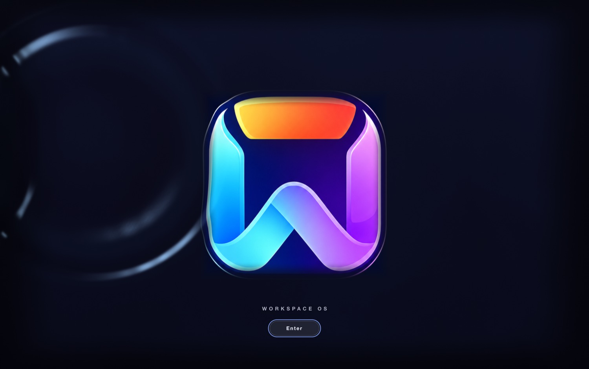
What Workspace OS is
A desk for people who run things: accounts, projects, a team. One app on the Mac where the work you already do and the agents that help you do it share the same window.
Most of a manager's day is spread across a dozen windows: the proposal in Word, the forecast in Excel, the deck, the inbox, the calendar, a browser full of tabs, and lately a chat window where an AI writes text you then carry back by hand. Workspace OS folds these into one place. Documents open in a real office engine, mail and calendar are native, the browser is built in, and a team of agents works inside the same folder you do. When an agent finishes something, it is a file on your disk and a card in your feed, not a paragraph to copy.
The unit of work is a case: a renewal, a forecast, a hire. A case gathers its notes, files, mail and calendar dates, and the app keeps track of which one is waiting on you. Home tells you that the moment you sit down.
One window
Word, Excel, PowerPoint, CSV, notes, mail, calendar and the web, side by side as tabs. Nothing to switch to.
Agents that do real work
Specialists you describe in a sentence. They read your files, drive the browser, draft replies, build decks and spreadsheets, and run on a schedule while you are away.
Keep or undo
Every agent run lands as a checkpoint. You see what changed, then keep it or roll it back in one click. Nothing is silently overwritten.
Numbers that stay live
A figure lives in one spreadsheet and flows into the document and the deck that quote it. Change the source, and everything downstream follows.
Sign in once
Connectors remember your accounts securely. Agents inherit the session, so the CRM, the drive and the mailbox are simply there.
It remembers
Knowledge links your notes; Memory holds what is worth keeping across sessions and lets you correct it. The desk assistant sees all of it.
Where things are
The shell
A left rail of surfaces, a stage of tabs, a search-or-run field, and a terminal that knows where you are.
- Rail on the left: Home, Files, Mail, Calendar, Chats, Browser, Agents, Cockpit, Knowledge, Memory, Connectors, Settings. ⌘B hides it.
- Stage tabs: Home is pinned, every opened document is a closable tab. ⌘W closes, ⇧⌘] and ⇧⌘[ step through.
- Search or run ⌘K: a command palette that finds files and runs actions.
- Terminal ⌘J docks a shell and an agent at the bottom or the right.
- Fill the window ⌃⌘F, Esc to leave.
Home
Coming home: what happened while you were away, the one thing waiting on you, and an assistant that sees the whole desk.
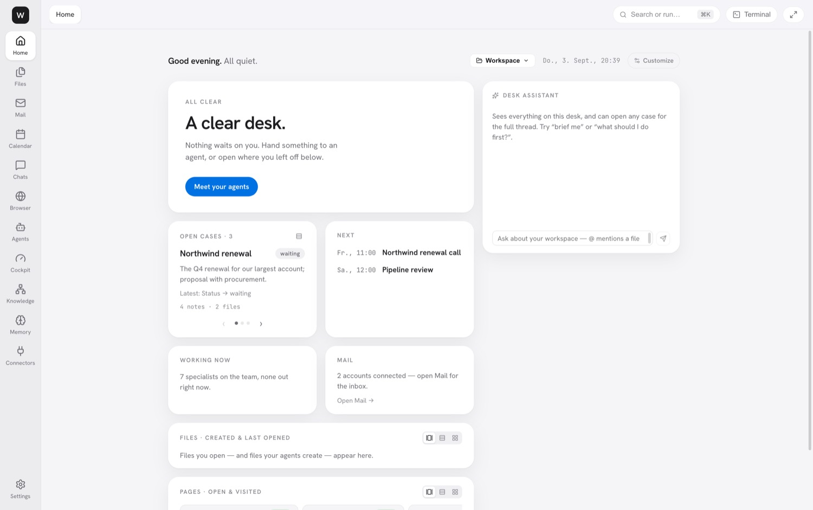
What you can do
- Open the waiting case, see all cases, or snooze it with Not now until tomorrow morning; with nothing waiting, Home offers your agents instead.
- Ask the Desk assistant anything about the workspace;
@mentions a file. - Switch workspaces from the folder name at the top; recents and Open folder live there.
- Customize the cards: show, hide, resize, reorder, list or slider view.
- Open any file from a card into a preview beside it, then pop it out to a full tab.
Reach it
Rail Home · Tab Home is always the first tab.
Cards
While you were away · Cases · Calendar · Agents · Files · Browser · Mail · Knowledge · Assistant.
Files
Your workspace folder, with the tree on the left and the file open beside it.
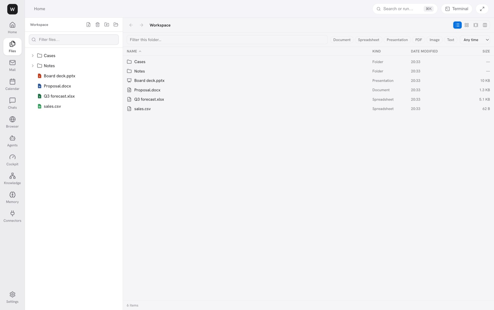
What you can do
- Browse the tree, filter by name, create files and folders, trash and restore.
- Open anything: the right editor comes up by file type (see the next sections).
- Preview in place, then Open full for a stage tab of its own.
- Reveal a file in Finder; drag files in.
Reach it
Rail Files · Menu File ▸ Open Folder ⌘O, Open Recent, Close Folder ⇧⌘W · Go to file ⌘P.
Agents
Every agent runs inside this folder. Files it creates appear in Home and the cockpit the moment they land on disk.
Word documents
A native word processor in the window: real .docx, edited in place by the LibreOffice engine, with a ribbon that speaks Word.
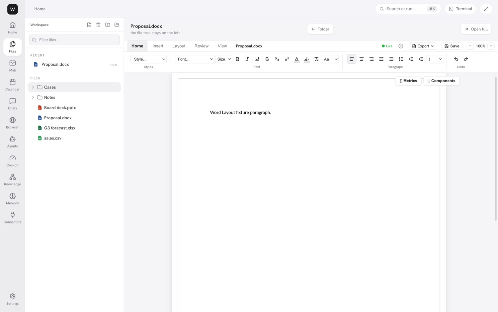
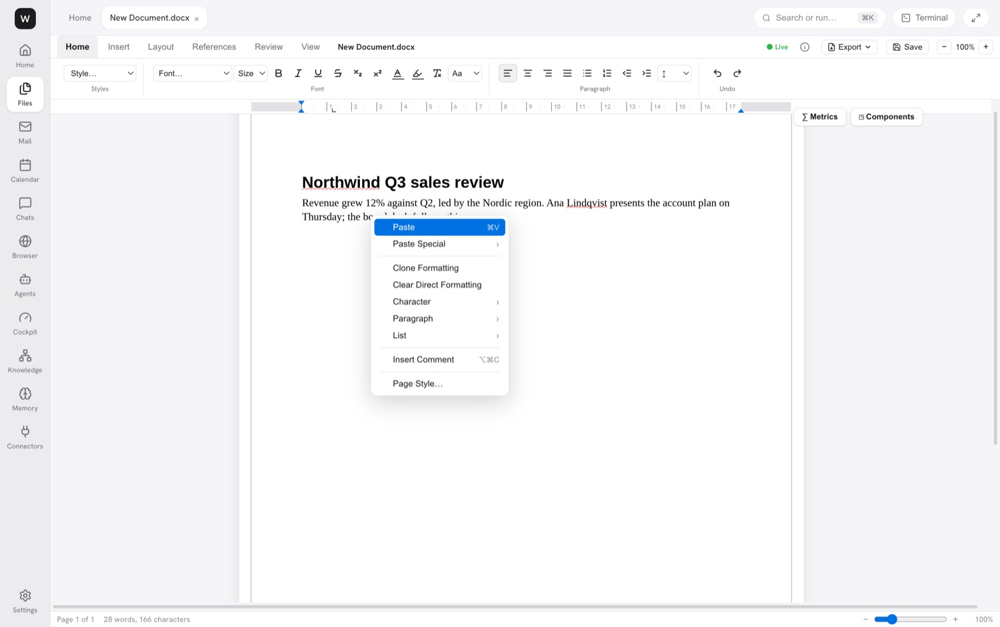
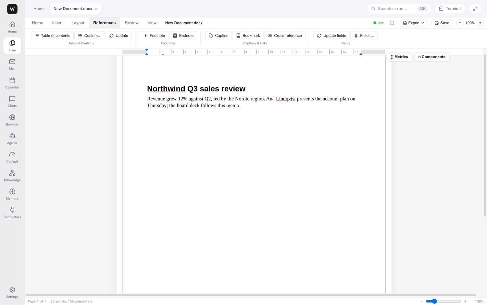
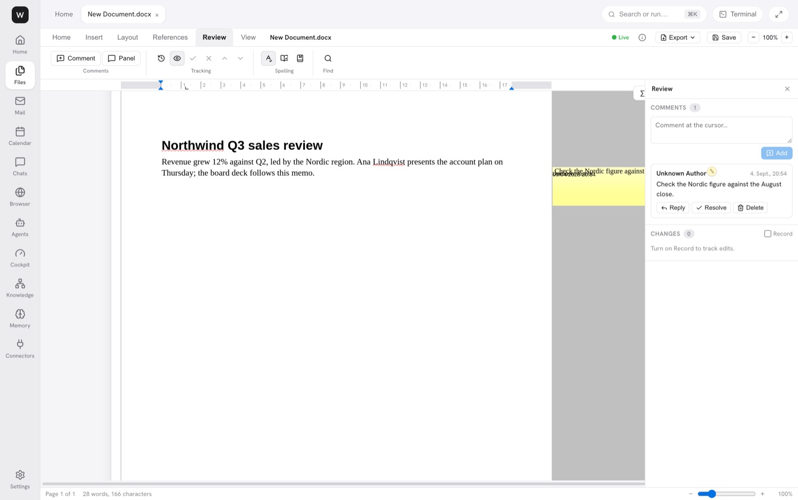
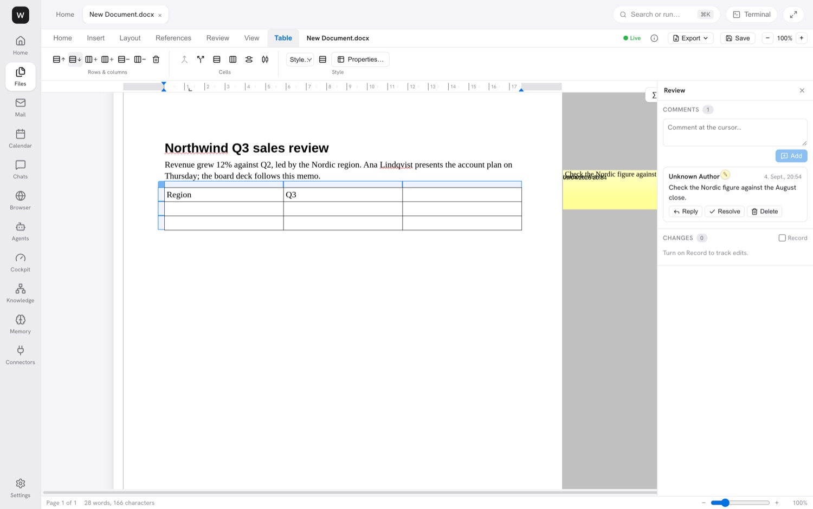
What you can do
- Type, format, style; Home, Insert, Layout, References, Review and View tabs, plus Table and Picture tabs that appear with the selection.
- Right-click anywhere: the engine's menu for that target, with submenus, check marks and keyboard navigation.
- Every dialog the engine has (Paragraph, Character, Table of contents, Bookmark, Columns, Sort…) opens as a native-looking dialog of ours; message boxes too.
- Review: comments and tracked changes in a panel; margin anchors open the thread.
- Layout: margins, orientation, header and footer, page numbers, columns, a watermark picker, line numbering. View: Normal, Web, Print preview, and the ruler.
- Pictures wrap and anchor from their tab; shapes get fill, outline, arrange, rotate and flip, and a rotate handle on the canvas.
- The native menu bar mirrors LibreOffice's Edit, View, Insert, Format, Styles, Table and Tools menus; ⌘K runs any of them by name.
- Export to PDF or Word; Save writes the .docx back, faithfully.
- Place a live metric in the text; it stays in step with the spreadsheet it came from.
Also opens here
.doc, .odt. PDFs open in a viewer with annotation and page tools.
Agents
An agent builds real documents with wos-gen docx from a JSON spec; the file opens in a tab when it lands.
Spreadsheets
Real .xlsx with formulas, formats and sheets, rendered fast enough to feel native.
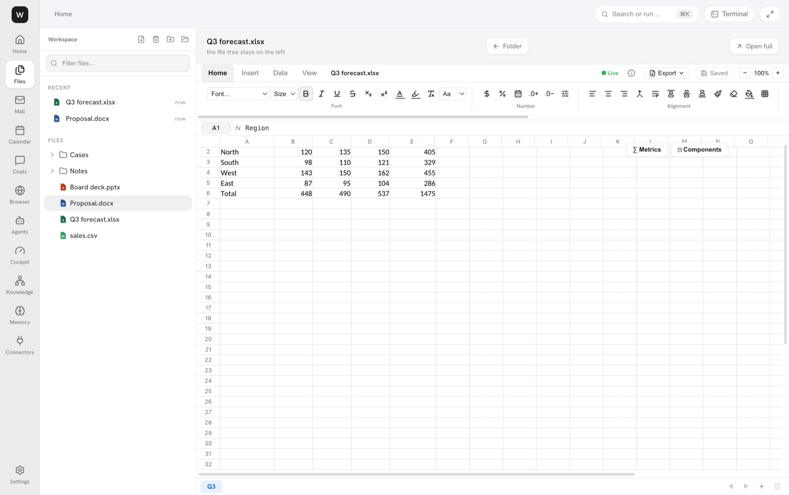
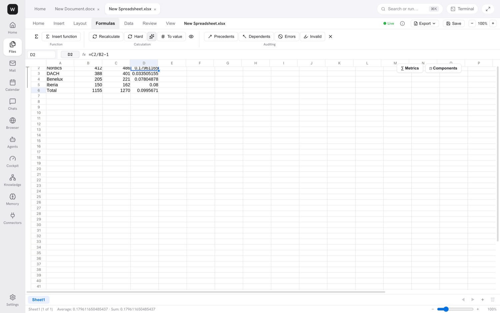
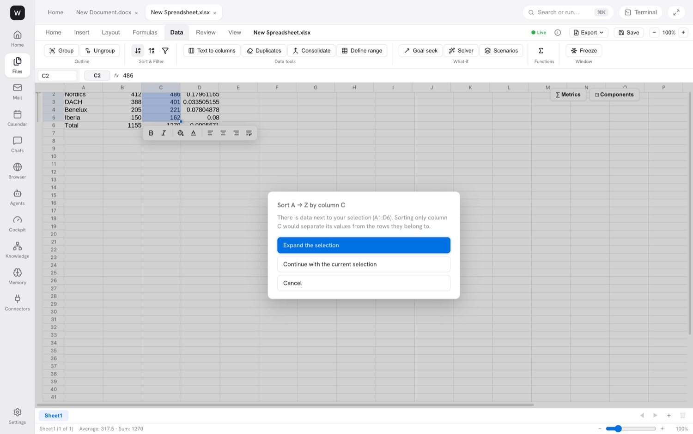
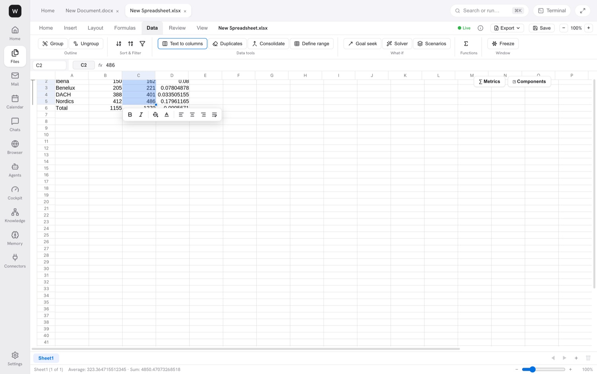
What you can do
- Edit cells and formulas; AutoSum; number formats; borders; conditional formatting; data validation; find and replace; a name box for jumping to and naming ranges.
- Fill handle at the selection corner continues a series; ⌘-wheel and pinch zoom; a floating toolbar on every selection.
- AutoFilter arrows with the engine's own dropdown; Sort that asks whether to expand the selection; Data ▸ Group and Outline with a −/+ bar.
- Cell styles and Format as table on Home; a Layout tab (margins, orientation, headers and footers, breaks, print area); a Formulas tab (calculation and auditing); Data tools (text to columns, duplicates, consolidate, goal seek, solver, scenarios).
- Right-click cells, sheet tabs and headers for the engine's menus; sheet tabs rename, reorder by drag, hide and colour.
- The status bar sums and averages the selection; View ▸ Page break shows the print layout.
- Turn a cell into a live metric that flows into decks, documents and mail.
Also opens here
.xls, .ods, and CSV/TSV (next section).
Agents
wos-gen xlsx builds a workbook; wos-metric create --source "book.xlsx!Sheet1!B2" binds a cell as the source of truth.
Presentations
Real .pptx with a slide rail, speaker notes, and a Present mode.
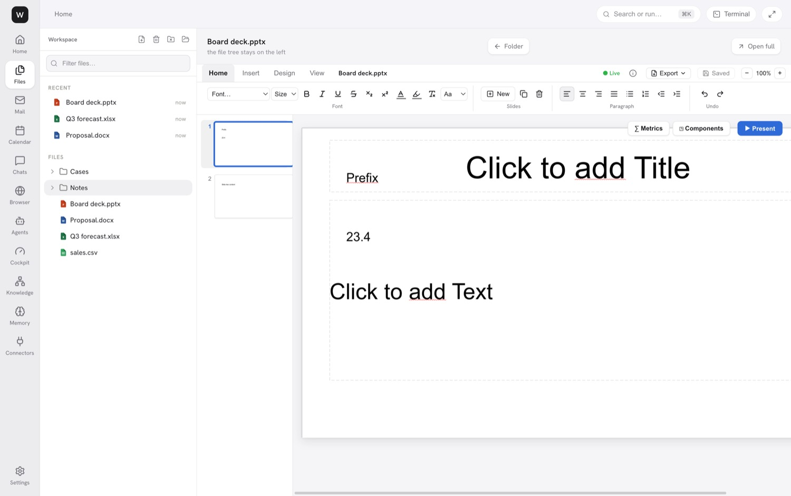
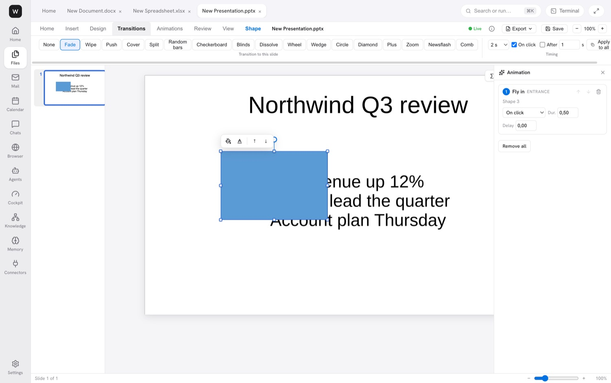
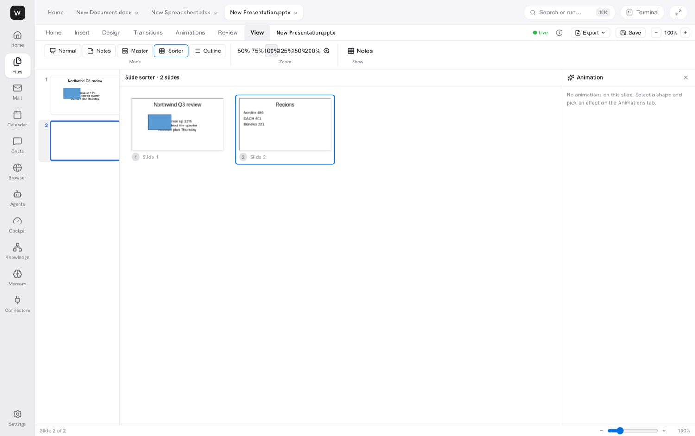
What you can do
- Reorder slides by drag, edit text and shapes, add speaker notes, present full screen; the slideshow advances on its own when a transition says so.
- Shapes: a Shape tab appears with the selection (fill, outline, arrange, rotate and flip, group, duplicate); drags snap to smart guides on other shapes and the slide centre; a rotate handle sits above the box.
- Slide tables get a Table tab and grips for rows and columns; right-click a thumbnail for new, duplicate, layout, hide, move, transition or start from here.
- Transitions and Animations tabs with an Animation pane; View ▸ Notes, Master, Sorter and Outline.
- Find and replace, comments in the Review panel, header and footer, slide number and other fields, QR codes.
- Drop in reusable Components (cards, timelines, callouts) from the components panel.
- Anchor a shape to a live metric; the number in the deck follows the sheet.
Agents
wos-gen pptx with layouts (cover, section, bullets, table, chart, closing) and a theme; the recipe in the agent's guidance builds a deck whose numbers stay bound to the spreadsheet.
CSV and data
A CSV opens straight into the spreadsheet engine with its delimiter sniffed, and saves back in its own dialect.
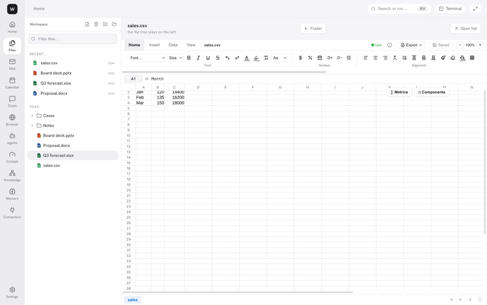
Notes and code
Markdown, text, code and JSON open in an editor with a live markdown preview; links between notes become a graph.
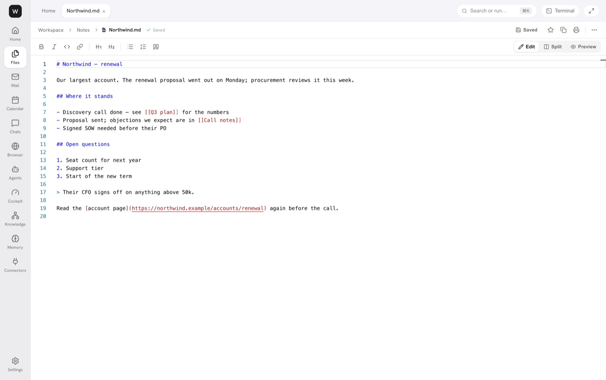
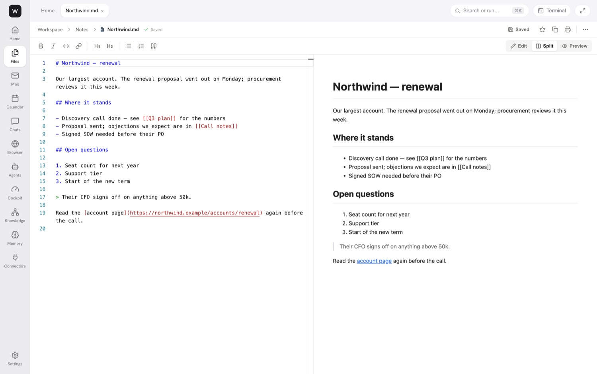
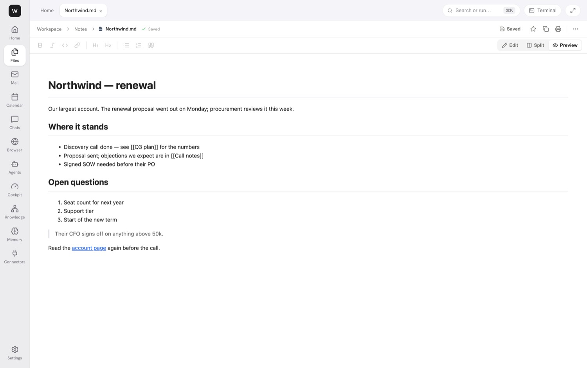
[[Q3 plan]] links the account note to the plan.What you can do
- Switch between Edit, Split and Preview with the segmented control on the toolbar.
- Write with a markdown toolbar and a live preview that also renders live transclusions.
- Link notes with
[[Note]]; see backlinks and related notes under Knowledge. - HTML files render with a preview and code toggle; images, video and audio open in place; a
.wcanvasfile is an infinite canvas.
Reach it
Open any .md, .txt, .json, .yaml or code file from Files or ⌘P.
A full native mail client that also sorts the inbox for you, and lets agents draft while you send.
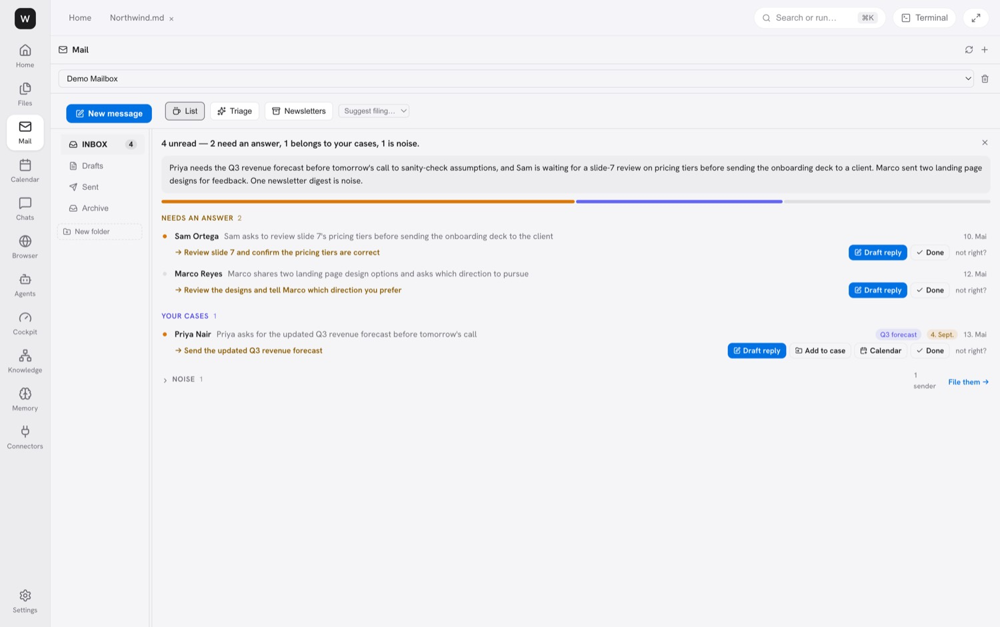
What you can do
- Read and send over IMAP and SMTP, several accounts, folders, search, archive, star, unread, undo-send, drafts, signatures.
- Sift: one pass sorts new mail into zones (needs a reply, your cases, worth a glance, noise). Every row carries its verbs; "not right?" teaches a permanent sender rule.
- Triage proposes filing; Newsletters sweeps subscriptions into one place, never moving anything on its own.
- Rich compose: arrangeable blocks, headings, images, live metric values, live tables, table-cell charts, your brand kit, split editor and preview.
Reach it
Rail Mail. Add an account with provider presets or Google and Microsoft sign-in; or try the offline demo mailbox.
Agents
Agents read and draft replies; drafts arrive as cards in Agents and on Home. Sending is always yours.
Calendar
Your real calendars, editable, with invitations actually sent by the server.
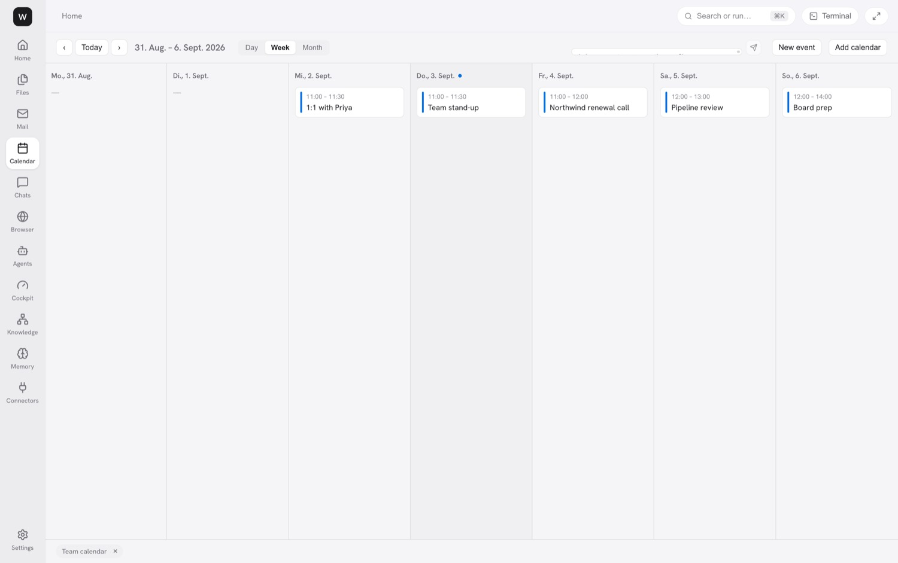
What you can do
- Create events with an inline calendar picker; open details; edit surgically so attendees and alarms survive; drag to reschedule in 15-minute steps; two-step delete.
- Recurring series with per-occurrence changes; attendee replies shown as marks; add or remove attendees.
- Sources: CalDAV (iCloud, Fastmail, Nextcloud) read and write, local .ics, subscribed feeds, Google and Microsoft read-only.
- An Ask box on the surface lets you say "move Thursday's review to 3" in words.
Reach it
Rail Calendar · Add calendar top right.
Agents
wos-action run calendar.createEvent schedules; the next event is pinned on Home.
Browser
A real Chromium browser inside the window, with an assistant that reads the page, and that agents can drive while you watch.
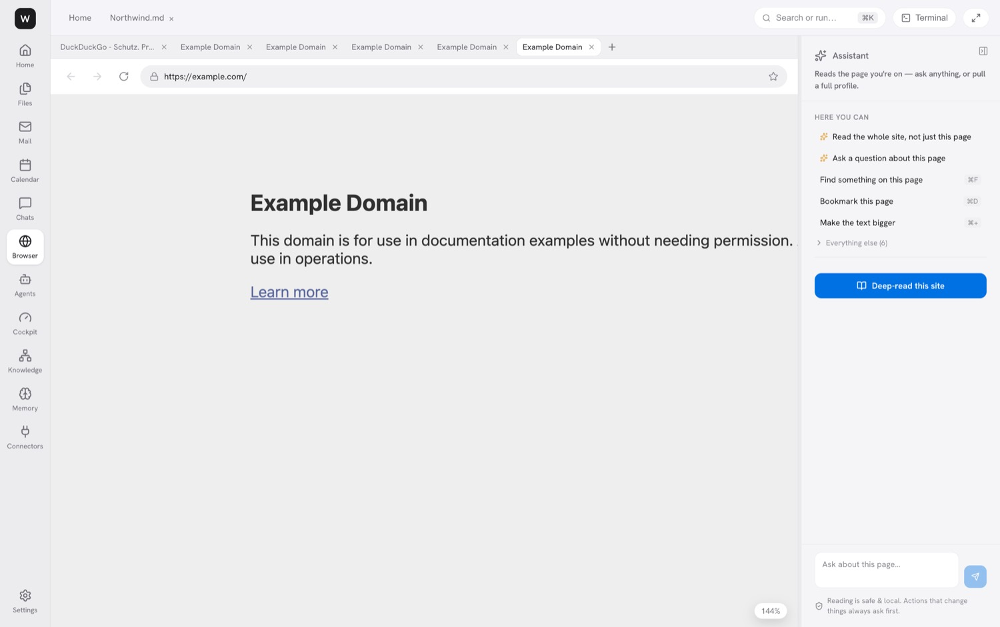
What you can do
- Tabs and tab groups, find in page, zoom, bookmarks, history search, session restore.
- Deep-read this site: a bounded multi-page profile; ask a question about the page.
- Sign in to a site once; the session persists, and agents work there as you (see Connectors).
Agents
Navigate, click, type, extract, map, screenshot and deep-read through wos-action run browser.*. Research fans out one tab per helper. Links from mail and agents open here on their own.
Agents
Your specialists, and the place where their work waits for your decision.
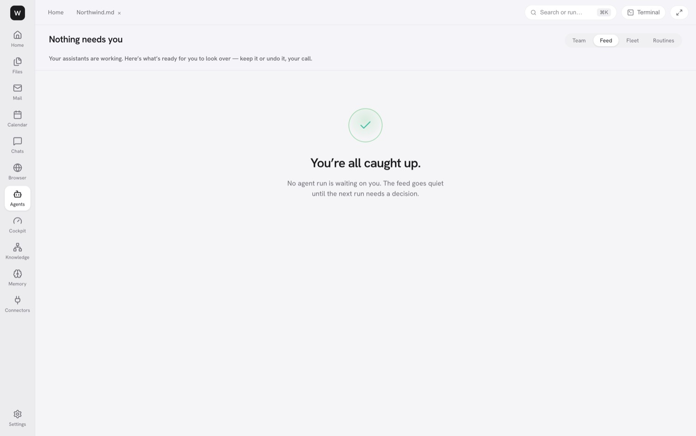
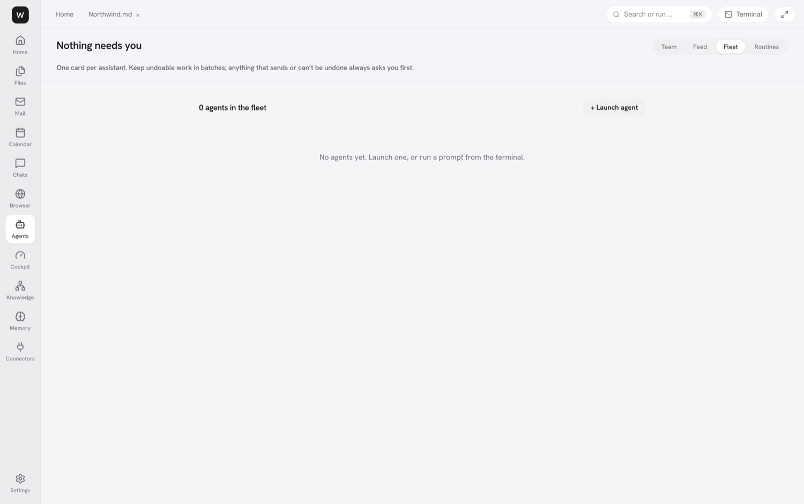
What you can do
- Team: run a specialist in a fresh agent tab; open one to read how it thinks; forge a new one from a description and approve the proposal.
- Feed: review runs with inline diffs, answer live permission requests, keep or revert. Mail drafts arrive here too. The reward is queue zero.
- Fleet: see every lane at once and approve all reversible work in one go.
Reach it
Rail Agents · ⌘⇧A focuses the agent · Menu Agent ▸ New Agent, Checkpoints, Mode, Run Skill.
Safety
A checkpoint is taken before every agent write; Revert rolls it back. Safe mode reads and generates only; Full mode edits and runs commands with destructive ones blocked.
Routines
Agents on a clock. Each run lands in the Feed for you to look over; nothing is sent on its own.
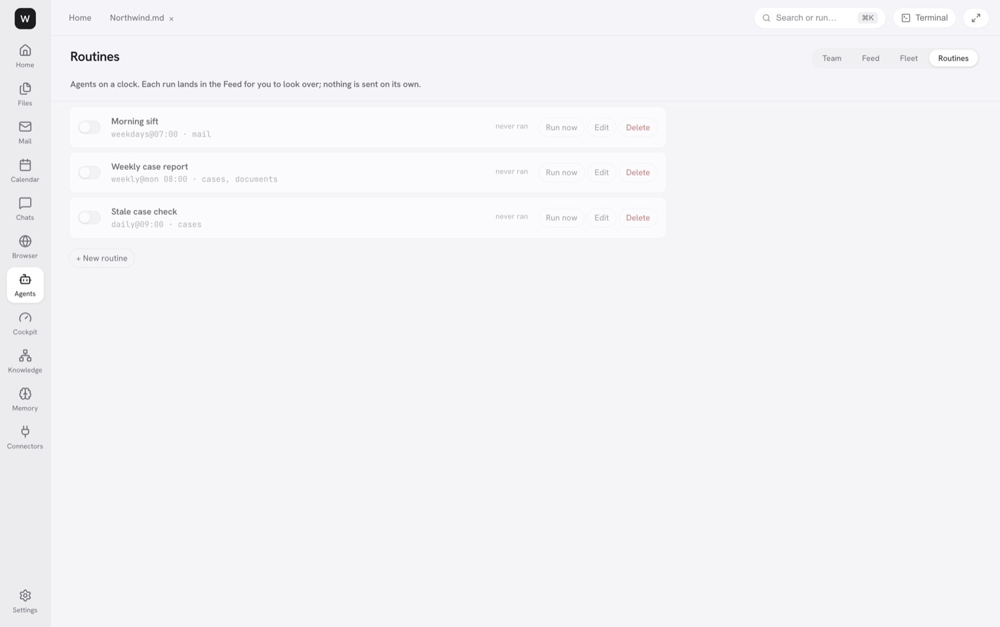
What you can do
- Create a routine: a name, what it does, when (every day, weekday, week, or every few hours), which agent, and exactly what it may reach.
- Turn it on or off, run it now, edit, delete. Last and next run are shown on the row.
- Missed runs catch up once when the app opens; a routine never stacks on top of itself.
Under the hood
Routines are background runs owned by the app, not a window: they survive the window closing, run in safe mode, and can only reach the capabilities you ticked. A run that needs you sends a notification.
Cockpit
Standing back from the work. Three views on the same data: what needs you now, what happened, and how it connects.
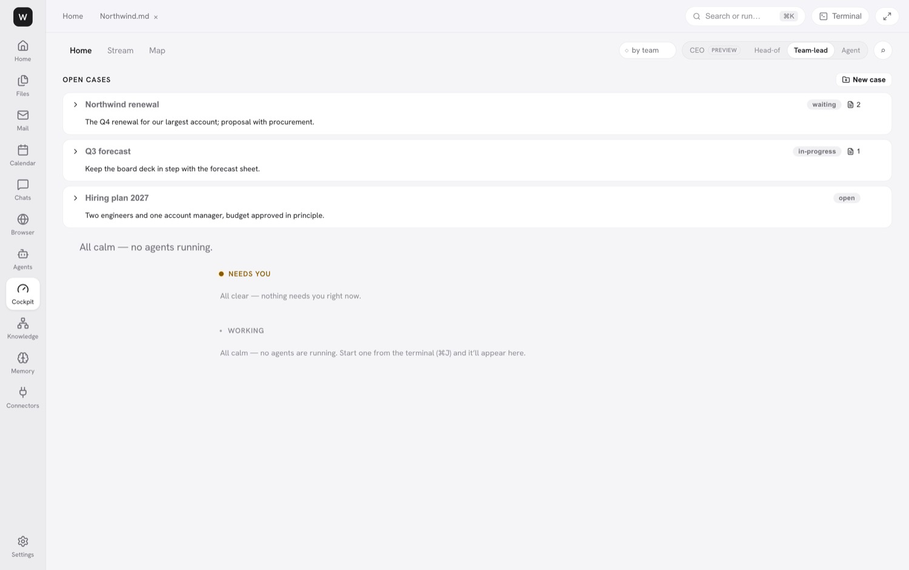
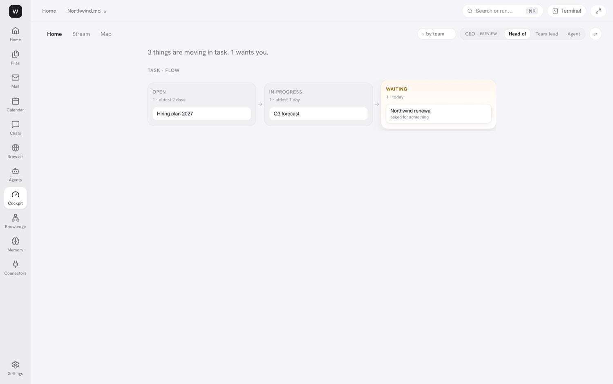
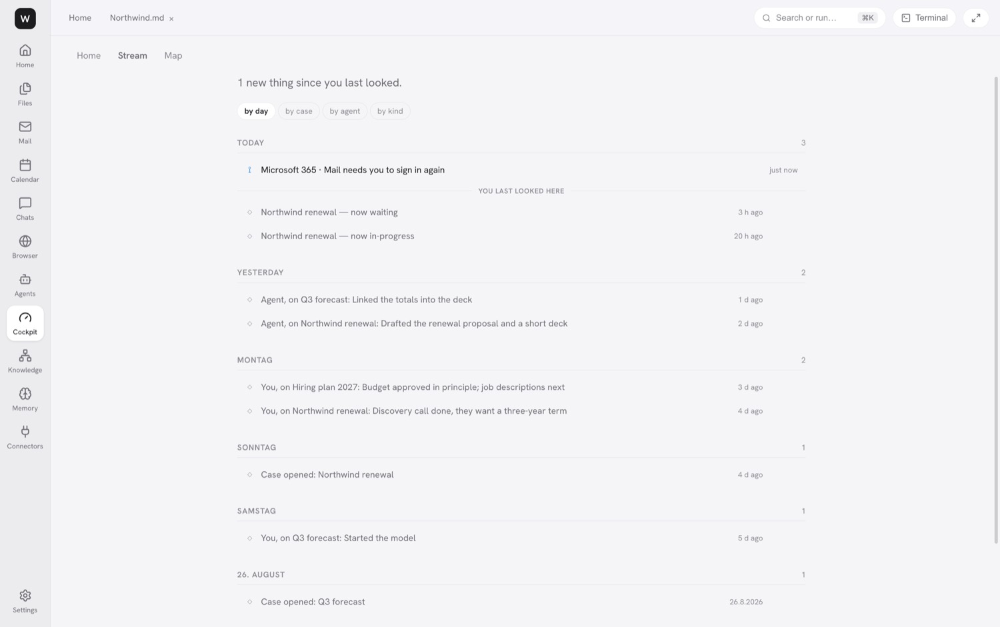
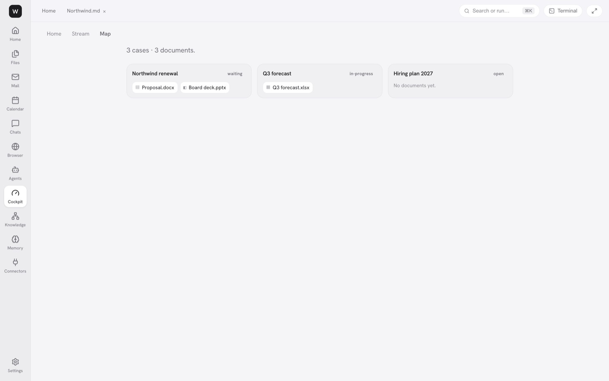
What you can do
- Fly between altitudes: Head-of, Team-lead and Agent are live; CEO is a preview preview.
- Re-slice with the lens; open a case from any view, one move away.
- Stream: group by day, case, agent or kind; jump to a case or file.
- Map: click a document to open it, a case to land on it.
Reach it
Rail Cockpit · Home, Stream, Map at the top.
Cases
The thread a piece of work leaves behind: its documents, its notes, its status, in a plain markdown file you own.
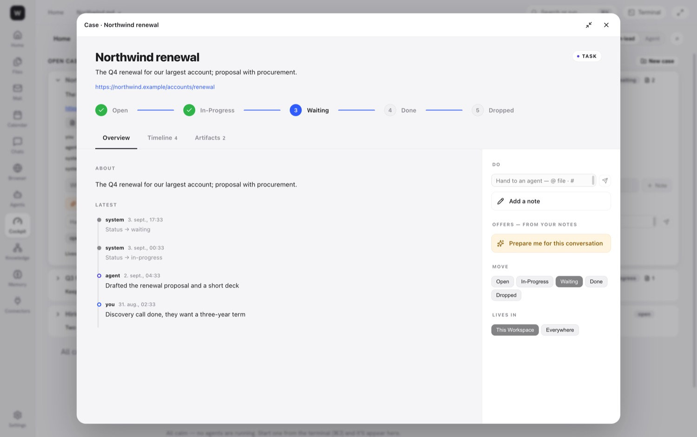
What you can do
- Create a case, move it through its stages, add notes, attach files, ask an agent to work on it.
- Offers the notes imply (research a person, prepare for the meeting, put it on the calendar) appear as one-tap suggestions.
- Tag a prompt with
#casein the prompt bar to give the agent the case as context.
Where they live
Cases/*.md in the workspace, or global. Home and the cockpit read the same files.
Agents
wos-case new · ls · get · note · attach · status · view, so terminal work lands in a case, not loose files.
Terminal dock
A real shell and a real agent, docked bottom or right, that already know where you are.
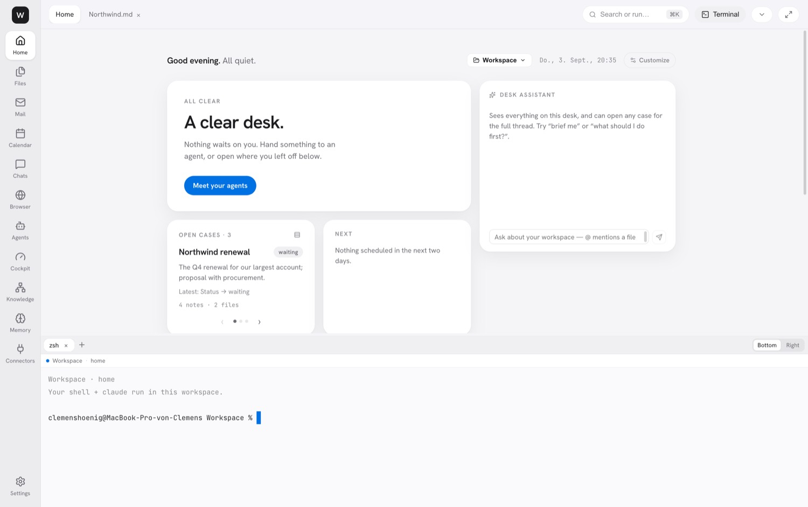
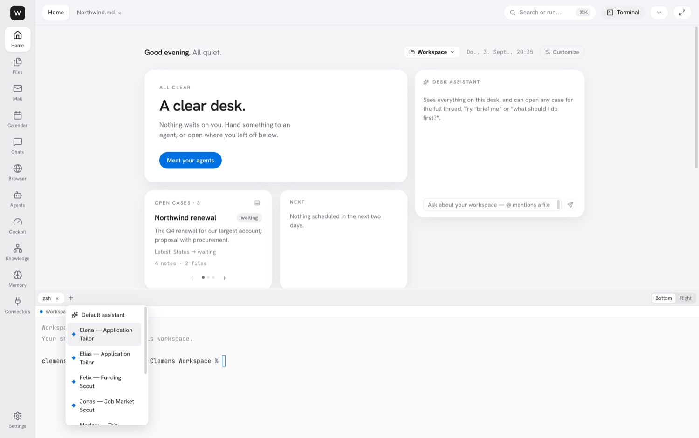
What you can do
- Open with ⌘J; ⌥⌘J minimises to a title bar that keeps the session alive.
- Agent tabs run Claude with the live harness: the root, the surface you are on, the open file, and the actions that surface offers.
- Per-surface quick-action chips; files the agent touches become chips that open in the editor.
- Tabs, transcripts and the feed belong to the open workspace and return when you come back to it.
Reach it
⌘J · the Terminal button top right · Menu View ▸ Toggle Terminal, Agent ▸ New Shell.
Knowledge
Your notes as a connected web instead of loose files.
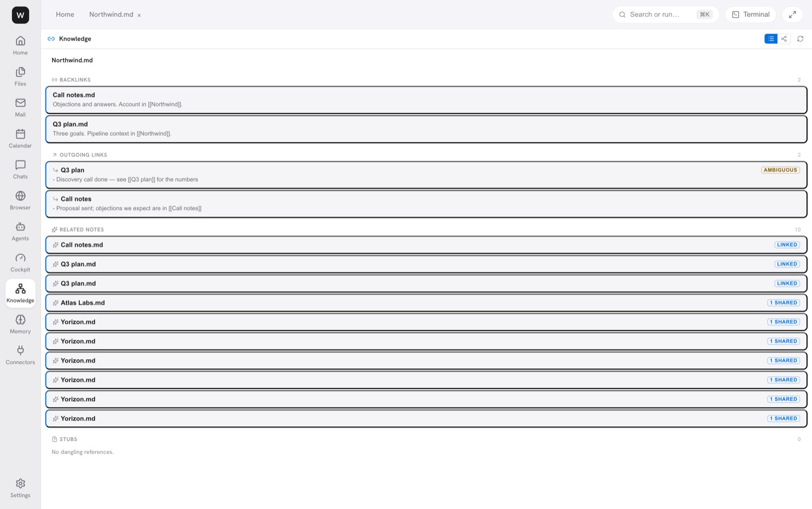
What you can do
- See what links to the open note and where it links; jump either way.
- Related notes are found by shared links, no model involved.
- Stubs list
[[links]]to notes that do not exist yet, so you can create them. - Graph view lays the whole web out.
Reach it
Rail Knowledge, with a note open · a document's Show backlinks action.
Agents
wos-action run knowledge.search and the Knowledge capability.
Memory
What the workspace has learned, so agents and you both remember.
What you can do
- Tell it something worth remembering; search; filter by kind; forget an entry.
- Agents read relevant memories before every run and record what they learn as they work.
- Insights (decisions, blockers, progress) gathered from sessions appear below.
Agents
wos-action run memory.search is available to every run; memory.remember needs the Knowledge capability.
Connectors
Everything the workspace is signed into, on one page, with what to click when a sign-in dies.
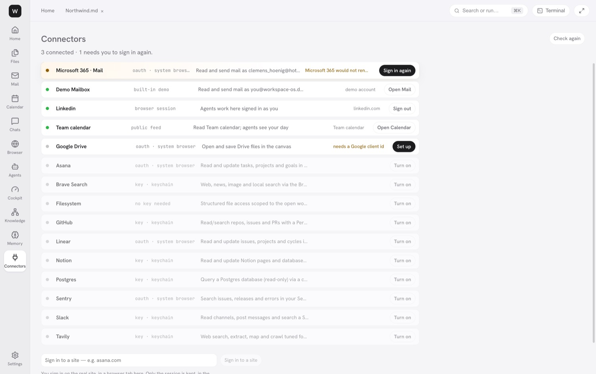
What you can do
- Turn MCP connectors on or off and store their keys; keys are written into the keychain and never shown again.
- Connect OAuth services (Sentry, Linear, Asana) through the system browser.
- Sign in to a site: you log in on the real site in a browser tab; only the session is kept, and agents then work there as you.
- Mail, calendar and Drive accounts show with a status computed by trying a real refresh; Check again re-probes.
Catalog
GitHub, Filesystem, Postgres, Brave Search, Slack, Notion, Tavily (keys); Sentry, Linear, Asana (OAuth); Google Drive; any site.
Settings
The few switches that change how the whole app behaves.
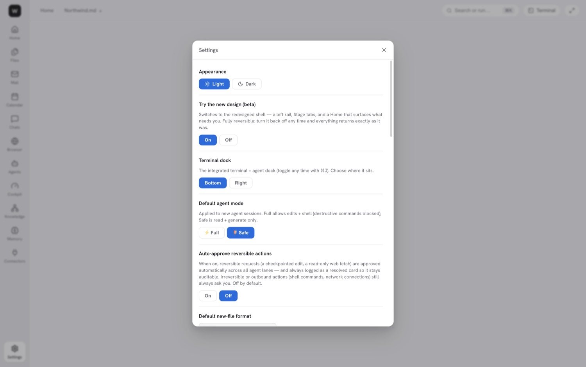
- Notifications: an agent is asking · a routine needs a look · a case is waiting on you (off by default) · a sign-in died. One per thing per ten minutes.
- Brand kit: colours, fonts, logo and voice that steer rich mail and generated documents.
- Engine and tools: whether the office engine, the document generator and the Claude CLI were found.
Find and run
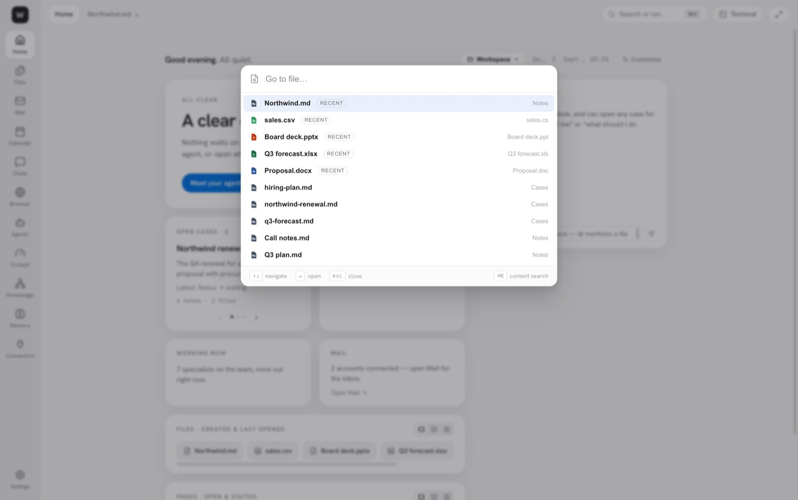
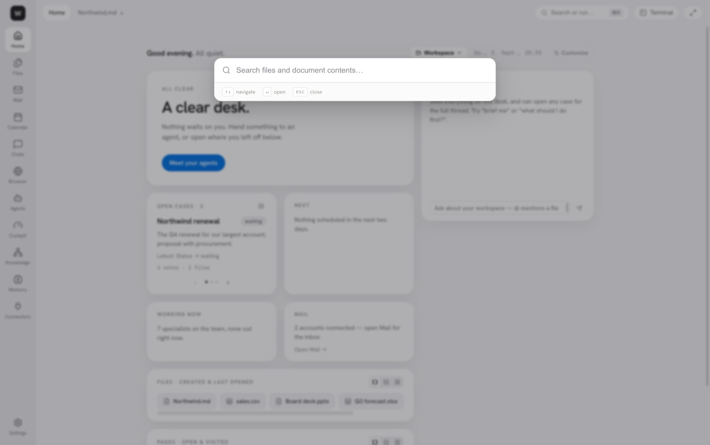
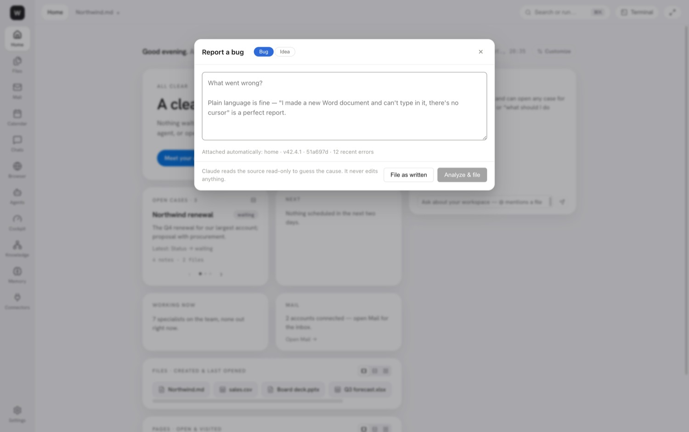
Live links, safety, and the rest
Live transclusion
One number or table lives in one place and stays true across spreadsheets, documents, decks, mail and notes. A metric is read from a cell and linked into a deck shape or a document field; sync pushes the value into every linked file on disk. A broken link shows a visible placeholder, never a wrong number.
Checkpoints and revert
Before an agent writes, a shadow checkpoint is taken. Every card in the Feed can be kept or reverted; Agent ▸ Checkpoints lists them with diffs.
Notifications
Local notifications for the four things worth an interruption, throttled to one per thing per ten minutes. A click lands on the rail the thing lives on.
Snapshots
File ▸ Snapshots saves and restores the whole desk: open files, the active one, panel layout.
Updates
A banner appears only when there is an update; Workspace OS ▸ Check for Updates.
Agent commands
Every agent run has these on its PATH. They are how an agent reaches the app without touching anything it was not given.
| Command | What it does |
|---|---|
| wos-gen | Build a real .pptx, .xlsx or .docx from a JSON spec. The file opens in a tab when it lands. |
| wos-metric | Create, read, set, link, refresh and sync live metrics and ranges across every linked file. |
| wos-collection | Typed record sets with filtered, sorted views linked into tables and ranges; sync updates them. |
| wos-case | Create and update cases: note, attach, status, view. |
| wos-action | Drive the live app: list, context, run. Every action is non-destructive; it can never send or delete. Each run carries a token and can only run what its grant allows. |
| wos-mcp-token | Mint the current bearer for a remote OAuth connector; never logs a secret. |
Keyboard
| Keys | Does |
|---|---|
| ⌘K | Search or run |
| ⌘P | Go to file |
| ⇧⌘F | Search in files |
| ⌘J · ⌥⌘J | Terminal dock: toggle · minimise |
| ⌘⇧A | Focus the agent |
| ⌘B | Hide the rail |
| ⌘W · ⇧⌘] · ⇧⌘[ | Close tab · next · previous |
| ⌃- · ⌃⇧- | Back · forward through tabs |
| ⌃⌘F | Fill the window; Esc leaves |
| ⌘O · ⇧⌘W | Open folder · close folder |
| ⌘⇧B | Report a bug |